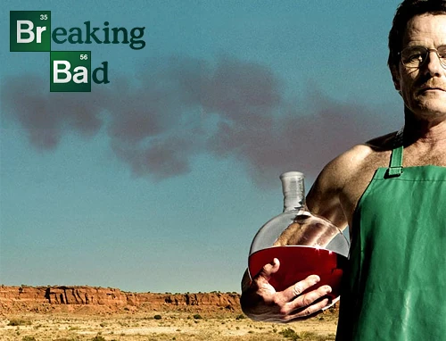

Temporada 1 : El inicio de la Transformación
Walter White , un profesor de química de secundaria mal pagado y poco apreciado, es diagnosticado con cáncer de pulmón terminal. Desesperado por asegurar el futuro financiero de su familia, su esposa Skyler y su hijo Walt Jr. , deja su segundo trabajo en un lavadero de coches y se asocia con su antiguo alumno Jesse Pinkman , ahora un traficante de drogas conocido como Cap'n Cook, para fabricar y vender metanfetamina cristalina para obtener ganancias. "Tú conoces el negocio y yo conozco la química", le dice a su antiguo alumno y futuro socio, quien más tarde declara que Walt es "un maldito artista", después de probar el primer lote cocinado en su laboratorio de drogas móvil .
Jesse lleva dicha muestra a Krazy-8 , su distribuidor y primo del recientemente arrestado socio de Jesse en el tráfico de drogas, Emilio Koyama . Emilio, en libertad bajo fianza y convencido por Krazy 8 de que Jesse lo delató, prepara una traición. Cuando un encuentro con los cuatro en el desierto sale mal, Jesse queda inconsciente y Walt es apuntado con una pistola y convence a Emilio y Krazy 8 de que si le perdonan la vida, les mostrará su proceso de cocina. Inesperadamente para los dos, Walt crea una explosión química, dejando a Emilio muerto y a Krazy-8 en mal estado. (" Pilot ") .
Krazy-8 logra escapar, pero Walt lo captura y lo encierra en un poste en el sótano de Jesse. Luego, Jesse y Walt lanzan una moneda para determinar quién disolverá el cuerpo de Emilio en ácido (trabajo de Jesse) y quién matará a Krazy-8 (trabajo de Walt). Mientras tanto, Skyler rastrea una llamada sospechosa de Jesse. Más tarde, cuando Skyler pregunta quién era el que llamaba, Walt le dice que Jesse es su traficante de marihuana.
Skyler visita a Jesse para pedirle que deje de venderle marihuana a su marido. Después de que ella se va, Jesse se pone a trabajar en la desincorporación del cuerpo de Emilio. Debido a que ignora las instrucciones específicas de Walt de usar un recipiente de plástico de polietileno, optando en cambio por verter ácido fluorhídrico sobre Emilio en la bañera, el ácido corroe por completo la bañera, que se derrumba al piso de abajo dejando a Walt y Jesse con un desastre sangriento para limpiar (" Cat's in the Bag... ") .
En la casa de Walt, Skyler le hace preguntas vagas sobre la marihuana a su hermana Marie Schrader , quien llega a la conclusión de que están hablando de Walter Jr., a pesar de las negaciones de Skyler. Poco después, Marie convence a su esposo, Hank Schrader , un agente de la DEA , para que asuste al niño y lo enderece. Sin embargo, Marie también está infringiendo la ley al haber robado un par de zapatos de una tienda donde sintió que el vendedor la ignoraba.

En otra parte de la ciudad, Jesse sale corriendo de su casa después de que Walt lo regaña por divulgar información personal a Krazy-8. Walt dice que tienen más trabajo que hacer, pero Jesse no está de acuerdo y afirma que "¡El lanzamiento de moneda es sagrado! Tu trabajo te está esperando en el sótano". Una conversación sincera con Walt deja a Krazy-8 seguro de que Walt lo perdonará, pero cuando Walt se da cuenta de que Krazy-8 tiene la intención de matarlo, estrangula al traficante hasta matarlo. Después de deshacerse del cuerpo, Walt regresa a casa y finalmente le revela a Skyler que tiene cáncer (" ... y la bolsa está en el río ") .
En una barbacoa familiar, Walt les revela su enfermedad a Marie, Hank y Walter Jr. Walt se niega a gastar 5.000 dólares para ver a un oncólogo de renombre. Walter Jr., frustrado por la falta de emoción de su padre, espeta: "Entonces, ¿por qué no te mueres de una vez?". Walt cede y usa las ganancias de la industria farmacéutica para pagar la factura.

Jesse, atormentado por los acontecimientos recientes, huye a la casa de sus padres. Allí, la criada descubre un porro. Jesse niega que sea suyo, pero sus padres lo echan. Cuando se va, su hermano menor, Jake Pinkman , le agradece a Jesse por no delatarle (" Cancer Man ") .
En una fiesta de cumpleaños en su elegante casa, Elliott Schwartz , ex colega de Walt y ganador del premio Nobel, le ofrece empleo, diciendo que su compañía ofrece un excelente seguro médico. Walt rechaza la oferta y luego acusa a Skyler de incitar a Elliott a hacerlo.
Jesse intenta cocinar metanfetamina con su amigo Badger , pero no puede igualar la calidad de Walt. En una reunión familiar sobre el cáncer de Walt, Walt les dice a todos: "Lo único que me queda es cómo decido abordar (el cáncer)"; decide no someterse a quimioterapia. Sin embargo, a la mañana siguiente dice que aceptará el tratamiento y la ayuda de Elliott.

En una clínica de quimioterapia, Walt le dice a Skyler que está tomando el dinero de Elliott, pero en realidad está usando las ganancias del tráfico de drogas. Mientras sus facturas de quimioterapia aumentan, Walt se reúne con Jesse y le dice que necesitan vender metanfetaminas al por mayor (" Gray Matter ") .
Después de descubrir una máscara de gas (etiquetada como propiedad de la escuela secundaria de Walt) en el desierto, Hank hace un inventario del almacén del laboratorio de química de Walt y concluye que "un mono drogadicto tuvo un frenesí alimenticio" allí.
Jesse consigue una entrevista con Tuco Salamanca , el "rudo" sustituto de Krazy-8 como distribuidor. A Tuco le encanta la metanfetamina de Walt, pero se niega a pagarla por adelantado, golpea a Jesse y le roba la metanfetamina. Walt vuelve para enfrentarse a Tuco, usando la identidad de "Heisenberg", engañándolo con lo que parece metanfetamina, pero que en realidad es mercurio fulminado que Walt usa para demoler la oficina de Tuco. "Tienes agallas", admite Tuco, y llegan a un acuerdo para obtener más metanfetamina (" Crazy Handful of Nothin' ") .
Jesse se indigna al enterarse de que Walt está haciendo negocios con Tuco. Las cosas se ponen aún más tensas cuando Walt no puede entregar el pedido de metanfetaminas de Tuco a tiempo. Walt convence a Tuco de que le dé un préstamo, aunque con un interés alto, para que él y Jesse puedan conseguir los suministros adecuados.

Walt le dice a Skyler que irá a una cabaña de sudor, pero en lugar de eso se dirige a la casa de Jesse. Felicita a Jesse por conseguir los suministros, aunque falta un químico clave . Jesse conoce a ladrones que pueden robarlo, pero quieren diez mil. Walt sugiere que él y Jesse lo roben ellos mismos.
Mientras tanto, Skyler se dirige a una joyería para devolver una tiara de diamantes de tamaño infantil que Marie le regaló en su baby shower. Cuando se acerca a la dueña con el regalo, la detienen y le informan que se lo robaron. Skyler finge dolores de parto, evita ser arrestada y se enfrenta a Marie, que se muestra evasiva.
Walt y Jesse llevan a cabo el robo y cocinan en el sótano de Jesse. En un depósito de chatarra de automóviles, Walt entrega la nueva metanfetamina a Tuco, quien está extasiado con los resultados. Cuando uno de los secuaces de Tuco se atreve a hablar por él, Tuco golpea brutalmente al tipo. Walt y Jesse miran en estado de shock. Para terminar, Tuco se ríe y le dice a Walt que lo verá la semana que viene (" Un trato sin complicaciones ") .